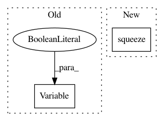

b558468a95e64ee2a0d154eedc0f6bc1d9b26862,deeppavlov/skills/go_bot/network.py,GoalOrientedBotNetwork,_build_graph,#GoalOrientedBotNetwork#,66
Before Change
self._loss = tf.nn.sparse_softmax_cross_entropy_with_logits(
logits=_logits, labels=self._action, name="loss"
)
self._step = tf.Variable(0, trainable=False, name="global_step")
self._train_op = tf.train.AdadeltaOptimizer(self.learning_rate)\
.minimize(self._loss, global_step=self._step, name="train_op")
def _add_placeholders(self):
After Change
print("DEBUG: logits =", _logits)
// probabilities normalization : elemwise multiply with action mask
self._probs = tf.squeeze(tf.nn.softmax(_logits))
//TODO: add action mask
//self._probs = tf.multiply(tf.squeeze(tf.nn.softmax(_logits)),
// self._action_mask,
// name="probs")
In pattern: SUPERPATTERN
Frequency: 3
Non-data size: 2
Instances
Project Name: deepmipt/DeepPavlov
Commit Name: b558468a95e64ee2a0d154eedc0f6bc1d9b26862
Time: 2018-02-06
Author: mary.vikhreva@gmail.com
File Name: deeppavlov/skills/go_bot/network.py
Class Name: GoalOrientedBotNetwork
Method Name: _build_graph
Project Name: OpenNMT/OpenNMT-py
Commit Name: d5a75ba09ae0595ca284fd806475eb8d3f771387
Time: 2017-01-17
Author: adam.paszke@gmail.com
File Name: word_language_model/generate.py
Class Name:
Method Name:
Project Name: OpenNMT/OpenNMT-py
Commit Name: 614c41e7f05d274991d95271c49a87af3fa2cf49
Time: 2017-12-22
Author: skywalker@postech.edu
File Name: onmt/Loss.py
Class Name: NMTLossCompute
Method Name: compute_loss